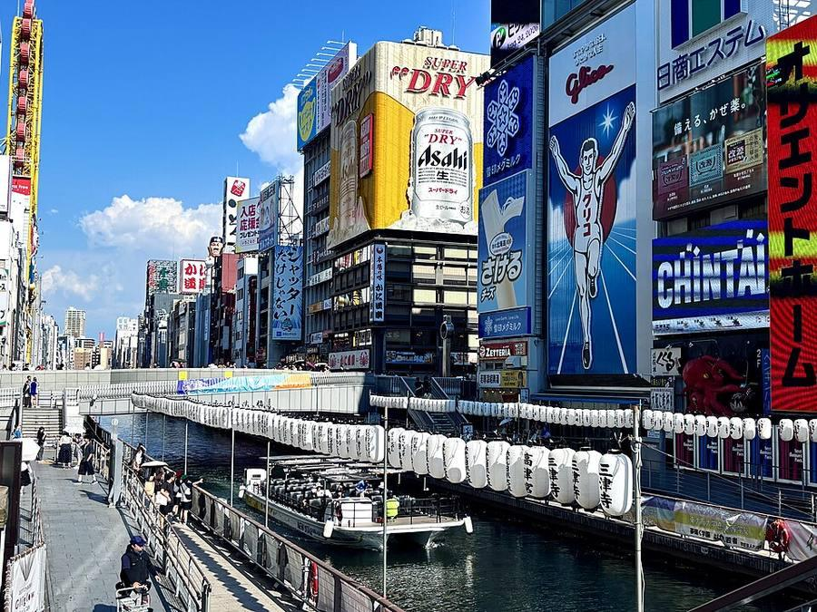
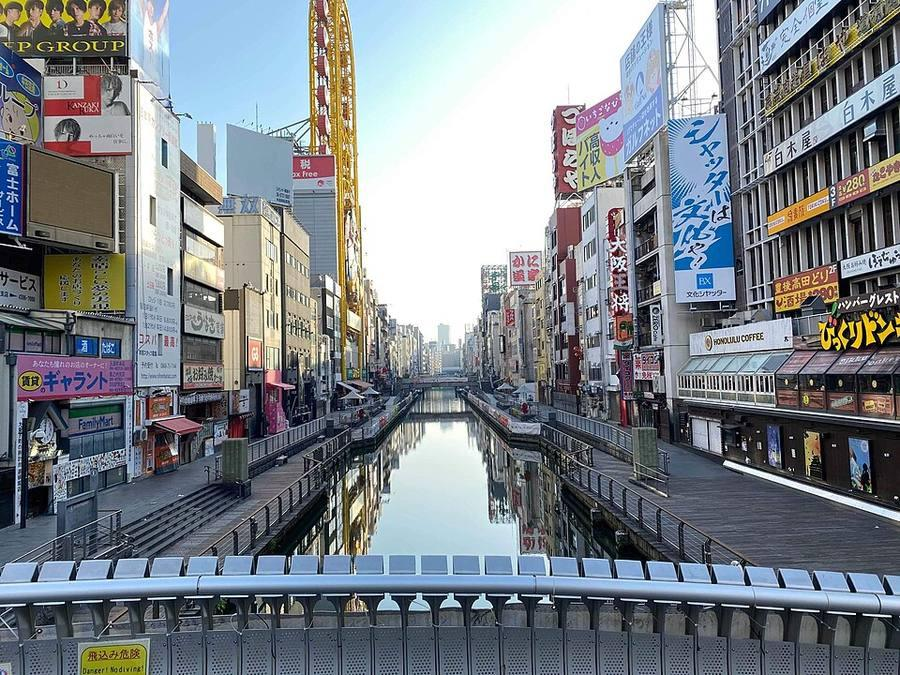
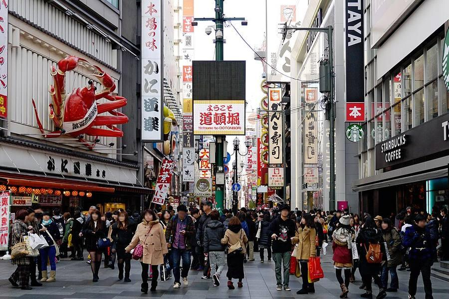
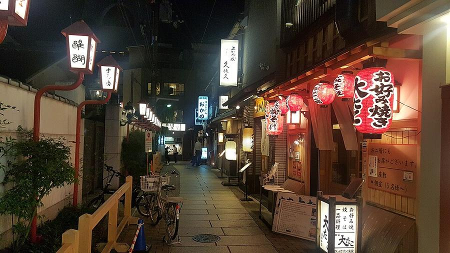
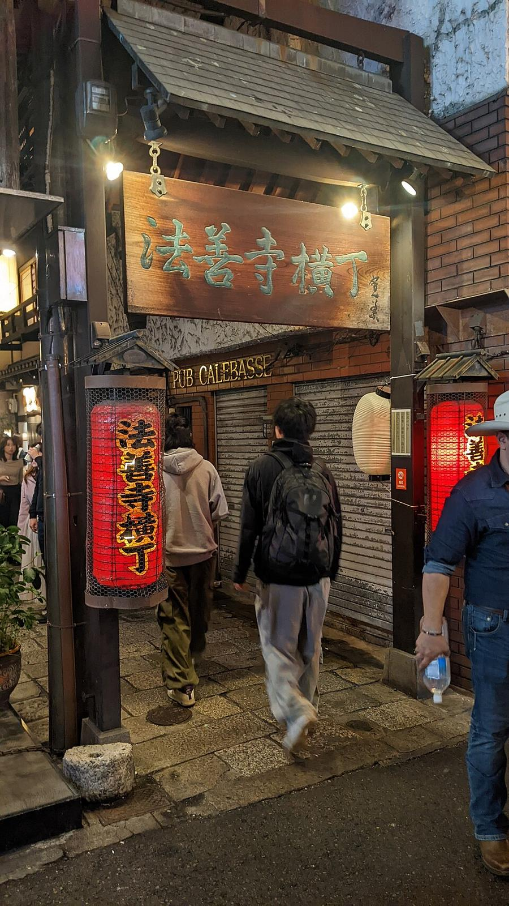

8Dotonbori и Hozenji Yokocho днём
道頓堀 / 法善寺横丁 · Юг · Namba, Shinsekai, Tennoji
В плане на Вс 25.10 - смотреть день





Днём Dotonbori выглядит иначе, чем вечером: видно сам канал, мосты и огромные объёмные вывески - краб, бегущий Glico. Вдоль канала пешеходная набережная.
В двух минутах - Hozenji Yokocho: каменный переулок старой Осаки с маленькими ресторанами и храм Hozenji (на этом месте с 1637 года). Статуя Mizukake Fudo - единственное, что уцелело после бомбёжки 13.03.1945. Её поливают водой из ковшика, поэтому она вся во мху.
| Часы | улица всегда; храм Hozenji круглосуточно |
|---|---|
| Вход | бесплатно |
| На месте | 30-45 мин |
| Дождь | ⛅ часть под крышей, в дождь - частично |
Источник часов и цен: houzenji.jp (офиц.)
Как добраться от отеля
- Метро Midosuji до Namba (9 мин) + 5 мин пешком, или до Shinsaibashi и 10 мин по крытой Shinsaibashi-suji.
Видео


Рядом

9. Рынок KuromonКрытый рынок с 1820-х: едят прямо у прилавков

7. Namba Yasaka: голова льваСцена в виде головы льва высотой 12 м
Фото: Wikimedia Commons, автор и лицензия под каждым. Поезда: Yahoo!乗換案内 на 24-26.10.2026, пешие отрезки: OSRM. Часы и цены проверены 24.10.2026 13:50 JST. ← ко всем местам